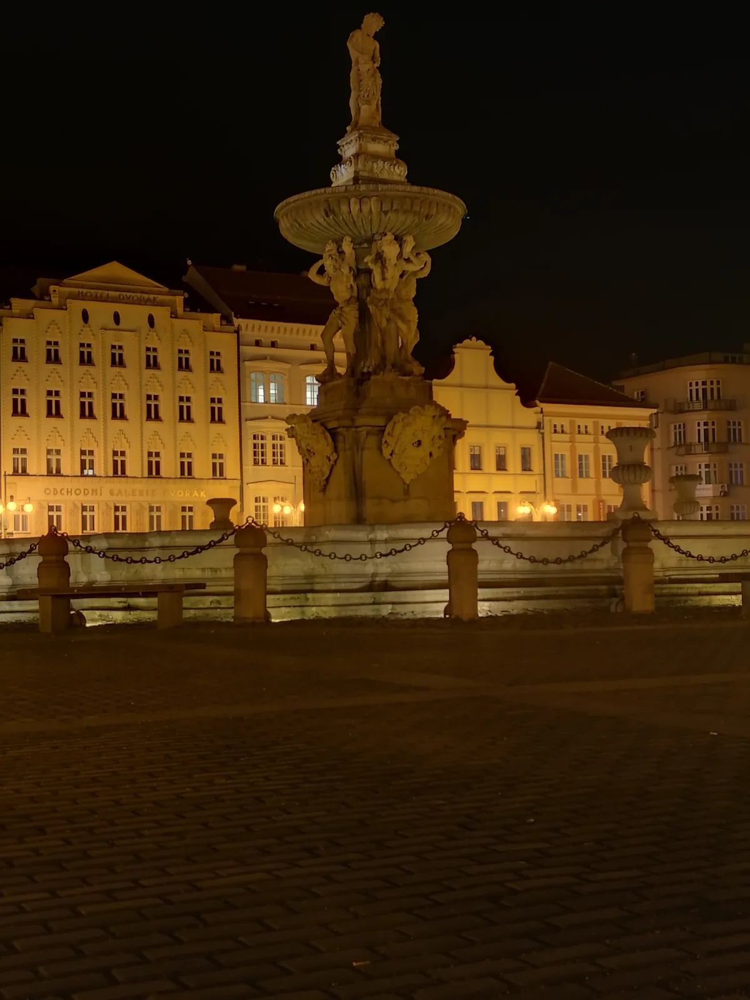
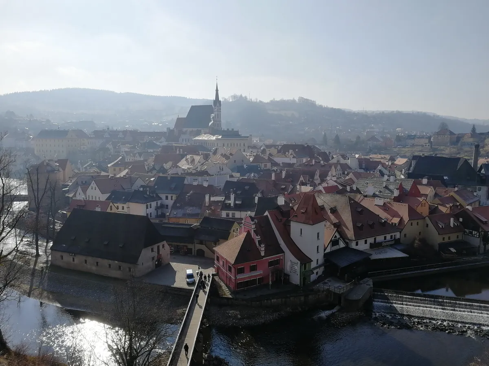
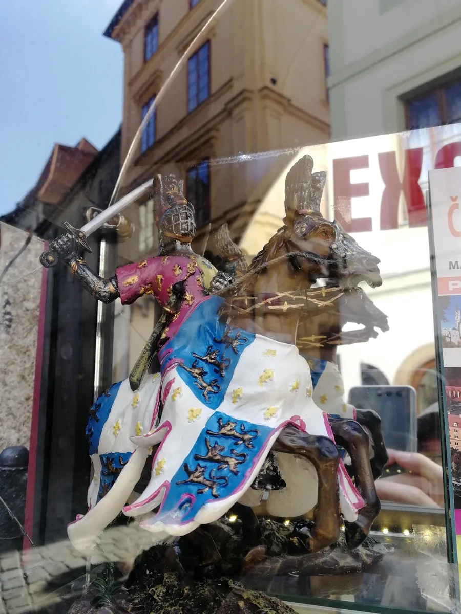
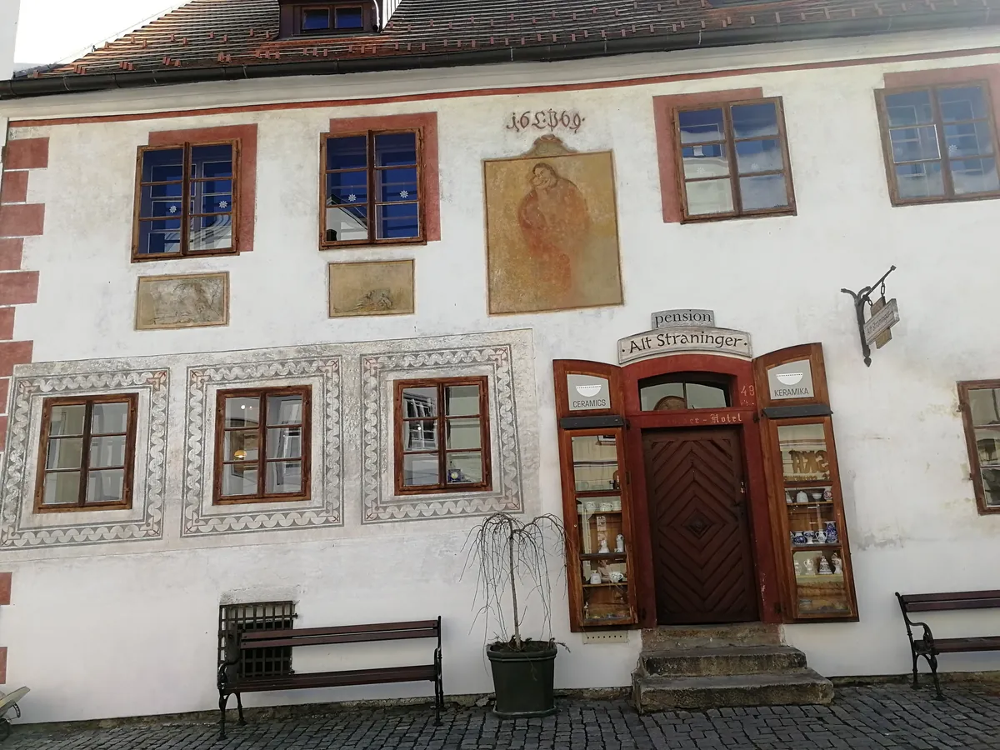
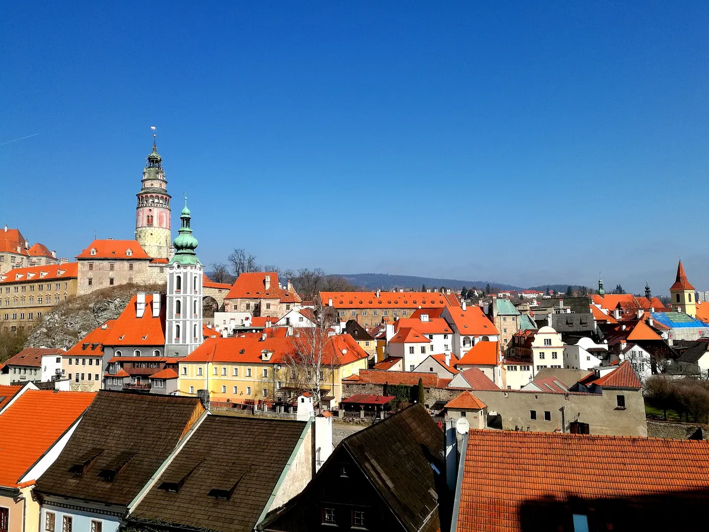

CK 小镇：一座活在中世纪里的波西米亚童话
Český Krumlov — a Bohemian fairy tale still living in the Middle Ages.

（2017 年 · 捷克 · 克鲁姆洛夫）
克鲁姆洛夫，大家习惯叫它 CK 小镇，「克鲁姆洛夫」这个名字本身的意思就是「河湾中的浅滩」——名副其实，伏尔塔瓦河在这里绕着城拐了两个 S 弯，整条河把小镇箍成了一个不规则的马蹄形，城堡区在河湾北边的山丘上，老城区就窝在河套中间。这座小城因为二战期间没有遭到任何破坏，中世纪的样子几乎原封不动地留到了今天，1992 年被联合国教科文组织列为世界文化与自然双重遗产。
一座换了五六个主人的城堡
城堡是这次拍照最多的地方，也确实值得——克鲁姆洛夫城堡建于 13 世纪，规模在整个波西米亚地区仅次于布拉格城堡。它的主人换过好几轮：最早是南波西米亚的维特克家族在这里开城建堡，一个世纪后交到了捷克最强大的贵族罗森堡家族手里，后来神圣罗马帝国皇帝鲁道夫二世买下了它，再后来又落到施瓦岑贝格家族名下，一直传承到了二战——这个家族的最后一代领主因为公开反对纳粹，城堡被没收充公，战后又被捷克斯洛伐克收归国有。一座城堡换了五六个主人，倒像是把中欧几百年的贵族史压缩着讲了一遍。


彩绘塔，和那个唯一能一次拍全的机位
城堡里最显眼的是那座彩绘塔，塔身外墙画满了文艺复兴风格的仿石雕纹样和骑士画像，颜色鲜艳得有点「俗丽」（不少游记都用了这个词，但站在下面抬头看确实挺震撼）。塔下面绿色尖顶的是圣乔治礼拜堂，始建于 1334 年；沿着城堡的五重庭院一路走进去，最后爬到彩绘塔顶端，整个小镇的橙红色屋顶会一次性铺在你眼前——这也是为什么大家都愿意在这里多拍几十张照片，这个机位是唯一能同时拍到彩绘塔、圣乔治教堂和对岸圣维特教堂的位置。


河两岸：一面是贵族，一面是平民
走下城堡进老城区，画风完全换了一挡——曲折的青石板路，窄窄的巷子，理发师桥连接着城堡区和内城，河边一路都是小酒馆、纪念品店和咖啡座。你说没划船，其实城堡下方河边那道堤坝白天经常挤满玩皮划艇的游客，倒也不算错过什么大事，克鲁姆洛夫真正的看点从来不在水上，在两岸——一面是山丘上层层叠叠的贵族城堡，一面是河谷里挤挤挨挨的平民老城，一条河把这两种完全不同的生活，规规矩矩地抱在了一起，五百多年都没怎么变过。
贵族的城堡和平民的老城，能被同一条河，规规矩矩地抱在一起五百年——这种共存的耐心，比任何宏大的规划都难得。
——董立鑫 海鑫汇创始人兼执行总裁，新加坡世贸秘书长兼首席运营官
本文整理自董立鑫（Bruce Dong）海外产业考察记录，首发于海鑫汇。